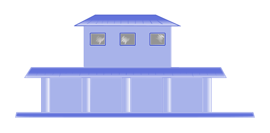

Trains, Boats and Streams
A 120 m train running at 15 m/s crosses a 180 m platform. How long does it take?
Q
✗ Engine only — not enough yet
✓ Whole train is out — crossing complete
15 m/s

120 m
? s

180 m
Distance = Train Length + Platform Length
A 120 m train at 15 m/s crosses a 180 m platform. Find the time.
120 m · 180 m · 15 m/s
Given
Length of Train = 120 m
Length of Platform = 180 m
Speed = 15 m/s
Length of Platform = 180 m
Speed = 15 m/s
Step 1
Total Distance = 120 + 180
= 300 m
= 300 m
Step 2
Time = DistanceSpeed
Time = 30015
= 20 s
Time = 30015
= 20 s
G
Length of Train = 120 m
Length of Platform = 180 m
Speed = 15 m/s
Length of Platform = 180 m
Speed = 15 m/s
1
Total Distance = 120 + 180
= 300 m
= 300 m
2
Time = 300 / 15
= 20 s
= 20 s